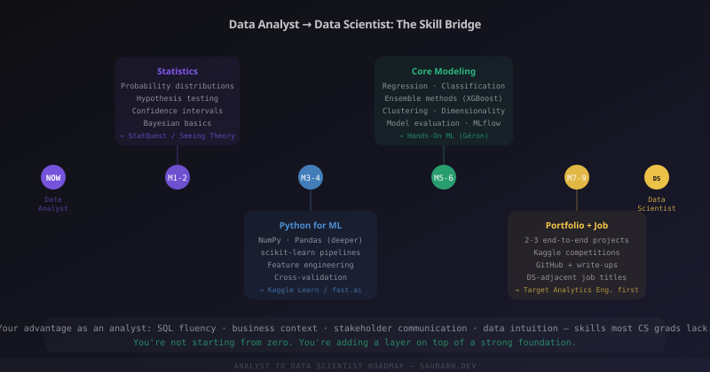

Most transition guides start with a list of things you don't know. "Learn Python. Learn machine learning. Learn statistics. Learn deep learning." The list is long and intimidating and makes the move feel like starting over from zero.
You're not starting from zero. That framing is wrong. Let me show you what you actually have, what's genuinely missing, and how to build the bridge in a sequence that makes sense.

What You Already Have (That Most Guides Ignore)
As a data analyst, you have things that CS graduates and bootcamp completers usually don't.
SQL fluency. Real SQL fluency — not just SELECT statements, but window functions, CTEs, subqueries, performance awareness. Most data scientists are weak at SQL. You're not. This matters more than you think, because almost every real ML project starts with data extraction and transformation, and that's SQL.
Business context. You understand what a metric actually means in the real world. You know why the denominator matters. You know which numbers the CEO looks at and which ones are vanity metrics. A model is only valuable if it connects to a decision — and you understand decisions in a way that pure technical people often don't.
Data intuition. You've spent hundreds of hours looking at data. You know when a number smells wrong. You know which distributions are plausible and which aren't. This intuition — the ability to sanity-check a model's output — is genuinely hard to develop and you already have it.
Stakeholder communication. You can explain a finding to someone who doesn't care about the technical details. This is, quietly, one of the most important skills in data science and most practitioners are mediocre at it.
What's Actually Missing
Be honest with yourself about the gaps. They're real but they're specific — not everything.
The first gap is statistical depth. You probably know enough statistics to do your analyst job — means, distributions, maybe some hypothesis testing. But data science requires understanding probability distributions deeply, maximum likelihood estimation, Bayesian reasoning, and the statistical assumptions that underlie every model you'll use. When your model is wrong, you need to know why statistically, not just empirically.
The second gap is Python for modeling. You might already use Python for data work. But scikit-learn, model pipelines, cross-validation, hyperparameter tuning, feature engineering as code, and model serialization are a specific skill set within Python that analysts rarely need. This is learnable — probably the most learnable gap on the list.
The third gap is modeling intuition. Knowing which algorithm to try for which problem. Understanding the bias-variance tradeoff. Knowing when a Random Forest is overkill and when XGBoost is the right call. Understanding what regularization is doing and when you need it. This comes from building models — not from reading about them.
Phase 1 (Months 1–2): Fill the Statistics Gap
Don't skip this. The temptation is to jump straight into scikit-learn tutorials and start fitting models. Resist it. Without statistical grounding, you'll be able to run models but not trust or explain them — which makes you dangerous rather than useful.
What to cover: probability distributions (normal, binomial, Poisson — when each applies and why), hypothesis testing and p-values (properly understood, not cargo-culted), confidence intervals, Bayesian basics (prior, likelihood, posterior — even a shallow understanding pays dividends), and the Central Limit Theorem (genuinely understand it, don't just know the name).
Best resources: StatQuest with Josh Starmer on YouTube is the single best resource for building statistical intuition without drowning in proofs. Seeing Theory (seeing-theory.brown.edu) is a visual introduction that makes distributions and inference tangible. Use these alongside a lightweight textbook — "Statistics" by Freedman, Pisani & Purves if you want intuition-first, or "All of Statistics" by Wasserman if you want rigour.
Phase 2 (Months 3–4): Python for Machine Learning
You probably know Pandas and NumPy at a working level. Deepen both — there are Pandas patterns (groupby transforms, pivot operations, memory-efficient dtypes) and NumPy operations (broadcasting, vectorization) that become important at model scale. Then move into scikit-learn seriously.
from sklearn.pipeline import Pipeline
from sklearn.preprocessing import StandardScaler, OneHotEncoder
from sklearn.compose import ColumnTransformer
from sklearn.ensemble import RandomForestClassifier
from sklearn.model_selection import cross_val_score
# The right way to build a modeling pipeline
numeric_features = ['age', 'salary', 'tenure']
categorical_features = ['department', 'region']
preprocessor = ColumnTransformer([
('num', StandardScaler(), numeric_features),
('cat', OneHotEncoder(handle_unknown='ignore'), categorical_features)
])
pipeline = Pipeline([
('preprocessor', preprocessor),
('classifier', RandomForestClassifier(n_estimators=100, random_state=42))
])
# Proper evaluation — not train/test split alone
scores = cross_val_score(pipeline, X, y, cv=5, scoring='roc_auc')
print(f"AUC: {scores.mean():.3f} ± {scores.std():.3f}")Learn pipelines from day one. Analysts who learn scikit-learn without pipelines build models they can't deploy or reproduce. Pipelines are how real ML code is written — preprocessing and modeling together, reproducible, serializable, testable.
Resources: Kaggle Learn (free, practical, uses real datasets), fast.ai Part 1 (excellent for building intuition about what models are actually doing), and the scikit-learn documentation itself (unusually good for a technical library).
Phase 3 (Months 5–6): Build Core Modeling Depth
Work through the core algorithm families in depth: linear and logistic regression (understand them mathematically — they're the foundation everything else builds on), decision trees and ensembles (Random Forest, Gradient Boosting, XGBoost — know when each is appropriate and why), clustering (K-Means, DBSCAN, hierarchical — and how to validate unsupervised results), and dimensionality reduction (PCA for preprocessing, UMAP for visualization).
For each algorithm, go through the same checklist: What problem is it solving? What assumptions does it make? What does it do when those assumptions are violated? How do I tune it? How do I know if it's working?
import xgboost as xgb
from sklearn.model_selection import RandomizedSearchCV
# XGBoost with proper hyperparameter search
param_grid = {
'n_estimators': [100, 300, 500],
'max_depth': [3, 5, 7],
'learning_rate': [0.01, 0.05, 0.1],
'subsample': [0.7, 0.9, 1.0],
'colsample_bytree': [0.7, 0.9, 1.0],
'reg_alpha': [0, 0.1, 1.0],
'reg_lambda': [1.0, 2.0, 5.0]
}
model = xgb.XGBClassifier(random_state=42, eval_metric='logloss')
search = RandomizedSearchCV(model, param_grid, n_iter=30, cv=5,
scoring='roc_auc', n_jobs=-1, random_state=42)
search.fit(X_train, y_train)
print(f"Best AUC: {search.best_score_:.4f}")
print(f"Best params: {search.best_params_}")The book for this phase is "Hands-On Machine Learning with Scikit-Learn, Keras & TensorFlow" by Aurélien Géron. Read Chapters 1–9 (the ML fundamentals, not the deep learning chapters). It's the single best practical ML book written.
Phase 4 (Months 7–9): Portfolio and Job Search
Two to three end-to-end projects, publicly on GitHub, with write-ups. Not tutorials. Not notebooks with cells run top to bottom. Projects with a clear problem statement, a dataset you had to wrangle, modeling decisions you made and can explain, results you can interpret, and code that is clean and reproducible.
The projects that work best for analysts transitioning are ones that combine your existing domain knowledge with new ML techniques. If you've worked in e-commerce, build a churn prediction model on customer data. If you've worked in finance, build a risk classification system. The combination of domain understanding and ML application is more impressive than a generic Titanic classifier.
On job titles: don't go directly for "Data Scientist" in your first application. Target "Analytics Engineer," "ML Engineer — Analytics," or "Senior Data Analyst (ML-focused)" first. These roles value your existing skills heavily, give you room to deepen ML, and will get you into an environment where you're working alongside data scientists — the fastest way to grow.
The Honest Timeline
Seven to nine months of serious part-time work (two to three hours on weekdays, longer on weekends) gets most analysts to a point where they can interview credibly for junior data science roles. "Serious" means actually writing code, not watching videos. The transition is realistic — people do it regularly. It's not fast, and it requires sustained effort. But you're not climbing a mountain from sea level. You're already at base camp.
One Last Thing
The analysts who make this transition successfully aren't the ones who learned the most algorithms. They're the ones who kept building projects, writing about what they learned, and putting their work in public — even when it was imperfect. Imperfect public work beats perfect private work every single time when it comes to getting hired.
Start with what you have. Build in the gaps. Ship the work. That's the whole plan.